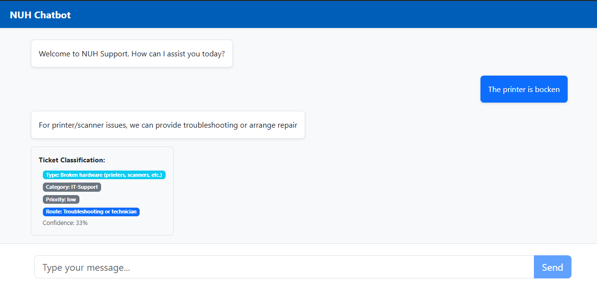

AI Ticket Tokenisation


Python, scikit-learn, NLP, Rasa, Flask
Group project focused on automating routine service desk tasks while identifying higher-priority issues requiring human support.
I developed the backend for a service desk automation project, building a Rasa chatbot that could process user requests and support ticket creation and prioritization.
GitHub Link: AI Ticket Tokenisation